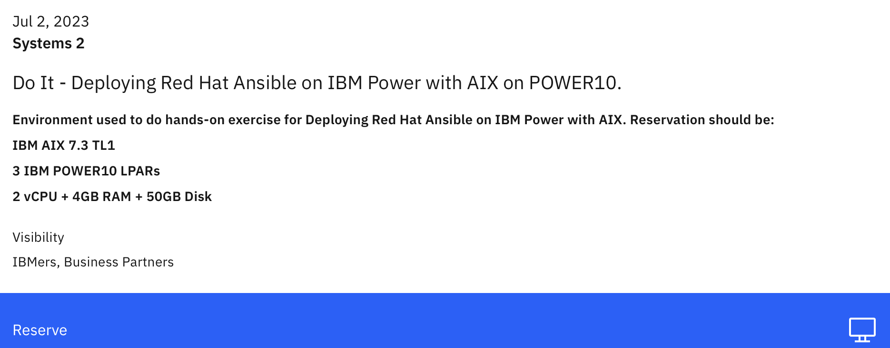
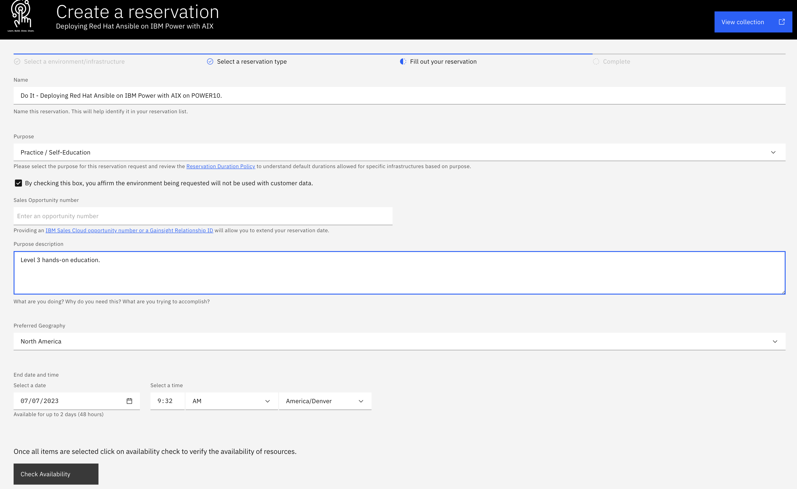
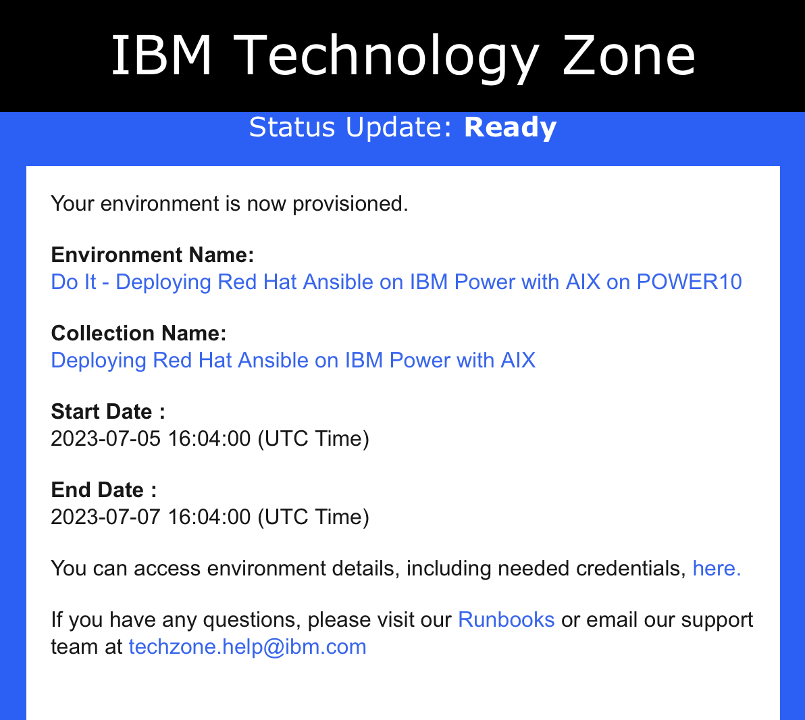
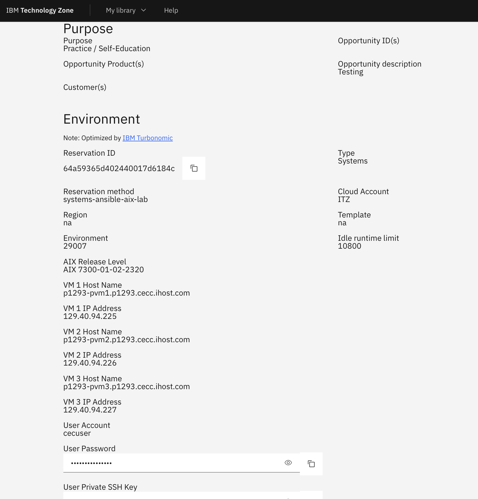
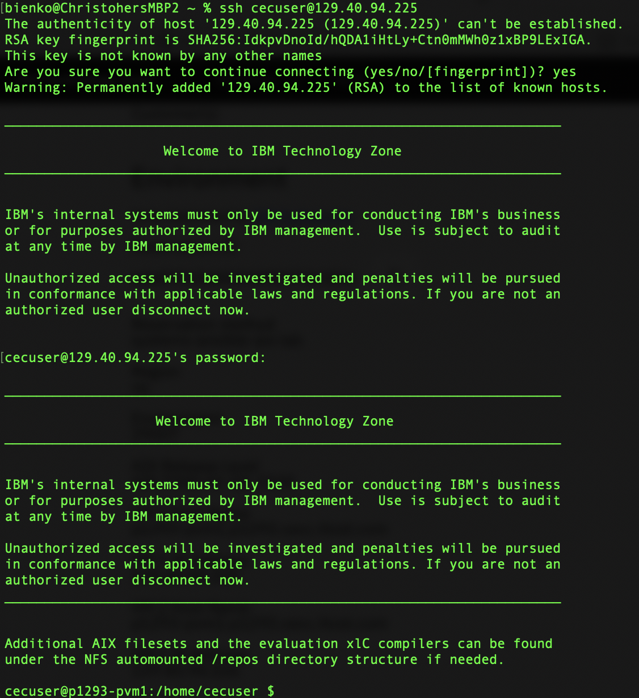
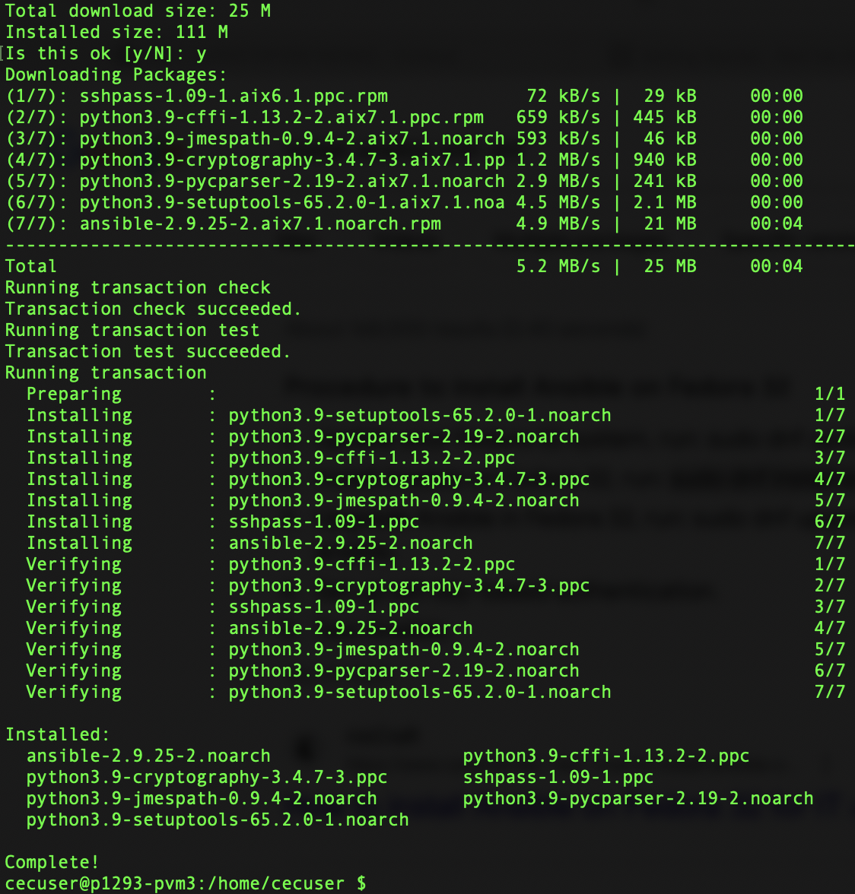
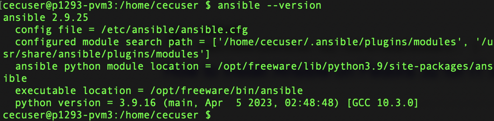

Reserving an environment
IBM TECHNOLOGY ZONE
You will require access to the IBM Technology Zone (ITZ) in order to reserve your environment and complete the hands-on training. If you do not yet have access or an account with the ITZ, you may register for one by visiting the following page: https://techzone.ibm.com
The hands-on environment can be provisioned free-of-charge using the reservation portal: https://techzone.ibm.com/collection/deploying-red-hat-ansible-on-ibm-power-with-aix/environments
Reservations take approximately 15-20 minutes to provision and deploy.
MULTIPLE ENVIRONMENT TEMPLATES
IBM Technology Zone may display multiple configurations to choose from. Select the template that matches the screenshot above and continue with the reservation steps as documented.

You may select the option to Reserve now (recommended) or Schedule for later.

In order to complete your ITZ reservation of the PowerVC infrastructure, you must supply the following information:
-
Name: Give your reservation a unique name.
-
Purpose: Set to Practice / Self-Education and affirm that the environment will not be used with customer data.
-
Purpose Description: Provide a brief summary of how the environment will be used.
-
Preferred Geography: Montpellier, France
-
Start Date & Time: Select the time and date for when you plan to begin work on the hands-on material.
-
End Date & Time: Select a time and date for when the reservation will expire. By default, Tech Zone will set the default duration to 2 hours. It is recommended you set your End Time to the maximum duration of 4 hours, after which it will automatically expire and de-provision.

When satisfied, click the Check Availability button at the bottom of the page to verify that resources are available for your requested time slot. If the check passes, you can finalize your reservation request by clicking Submit.
Accessing your ITZ reservation
As a reminder, reservations take approximately 15-20 minutes to complete from the time that you click submit. If you navigate to the My Reservations tab of the ITZ ( https://techzone.ibm.com/my/reservations ), you can monitor the progress of your reservation.
WAIT UNTIL READY
Wait for the Tech Zone reservation to be marked as "Ready" before attempting to start the lab — accessing it too soon will lead to issues (or an outright failure) when connecting to the PowerVC instance.
You will also receive an email to your inbox once the environment has successfully deployed, as shown here.

The "Your environment is ready" email contains links back to the My Reservations tab, which now is populated with all of the details needed to access your PowerVC environment — hostnames, addresses, login information, and so on. Navigate to the page, which should look similar to the following screenshot. Note that your environment's details will differ.

There are several critical pieces of information that you should record at this time, as they will be referenced again repeatedly in the steps to come. Save these values (unique to your environment) to a notepad:
-
User Account: This will be
cecuserfor all environments. -
User Password: Unique to your environment. Use the clipboard icon to copy.
-
VM 1 IP Address
-
VM 2 IP Address
-
VM 3 IP Address
The three virtual machines (VMs) will correspond to the Ansible AIX host and server nodes once Ansible has been installed and deployed across the cluster.
Connecting to the environment over SSH
VPN ACCESS
IBM employees and business partners will need to be connected to the IBM intranet via VPN in order to remotely SSH into the PowerVC cluster. If you are not connected via VPN, the connection attempt will time out.
SSH and PuTTY - WINDOWS USERS
For detailed instructions on how to connect with PuTTY on Windows, reference the linked material.
You now have all the necessary information to remotely connect over SSH to the PowerVC cluster. To connect via SSH, it is recommended that you use Terminal (MacOS) or PuTTY (Windows).
Connect via SSH using the following command:
Replace the UserAccount with the User Account (cecuser) recorded earlier. Similarly, replace the VM_1_IPAddress field with the IP address of VM 1 recorded earlier — use the value unique to your ITZ reservation.
Press return and wait until you are prompted to provide a password: supply the User Password value recorded earlier. Hit Return and wait for the connection to complete. If successful, your console will now be connected directly to the PowerVC cluster.

Installing Ansible on PowerVC
The next order of business is deploying Ansible to the three nodes of the ITZ-provisioned PowerVC cluster. Before we can do this, we need to make some preparations to the environment.
First, update the Dandified Yum (DNF) installer — which is now the officially supported software package manager for IBM Technology Zone, replacing yum and other alternatives.
The following will update DNF to the latest version:
Indicatey when prompted to continue updating the 73 packages.
Next, use DNF to install Ansible. One of the remarkable features of Ansible’s automation is how elegant and simple it makes even complex tasks like installing software across a cluster. Do so by executing the following:
It's as simple as executing the following command and pressingy when prompted. Easy!

Verify the integrity of your Ansible installation:

After connecting, you will be able to access the PowerVC GUI and SSH remotely into your PowerVC environment. Return to the "Demo Ready Notification" email (or the My Reservations tab on the ITZ) and follow the URL to your unique Project Kit page, similar to the one captured in the screenshot below.
The Project Kit summarizes all of the relevant connection information you will need to access your PowerVC and Ansible environment. Scroll down the page until you reach the Usage Instructions table near the bottom of the page.
The table contains two relevant rows: the first row "PowerVC GUI" contains information on how to connect to the PowerVC infrastructure; the second row "Ansible ssh console" details how to remotely connect to Ansible via SSH. You will be making use of both endpoints throughout the lab. As such, it's recommended that you copy for future reference the URLs for both the GUI and Ansible endpoints (note that they have different host addresses), as well as the userID and password values (they are identical across both environments).
Then check to see which version of Ansible the controller node is currently running:
Everything's now set and in good shape for you to get to work on deploying your first virtual machine via Ansible on to the PowerVC infrastructure.